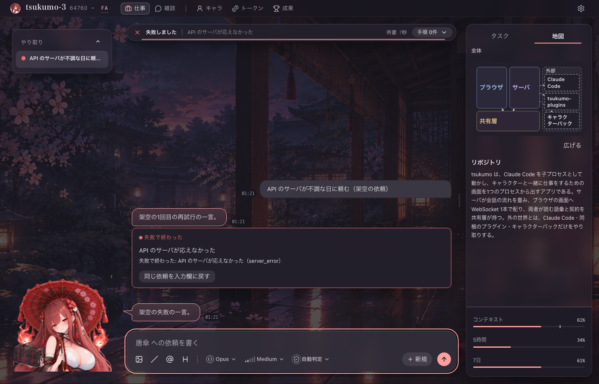
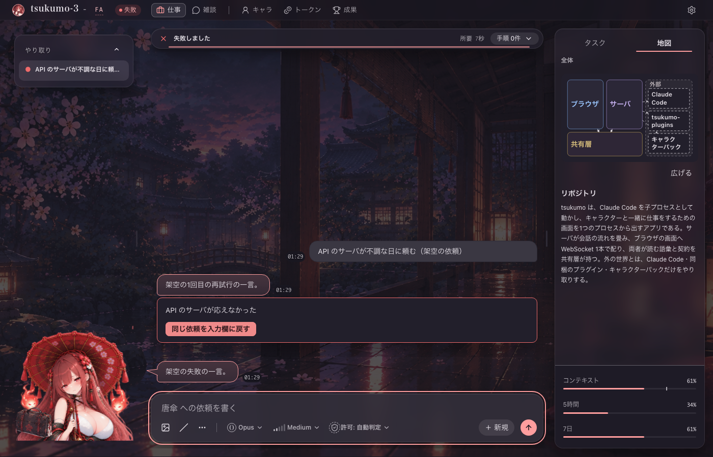
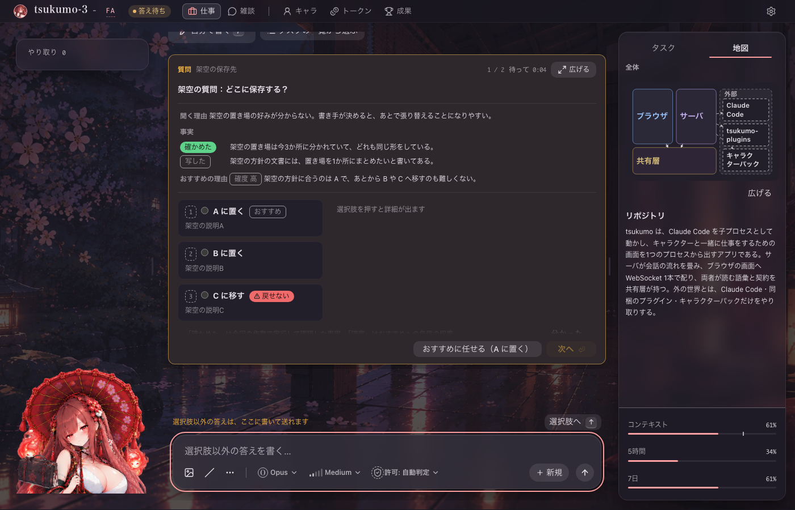
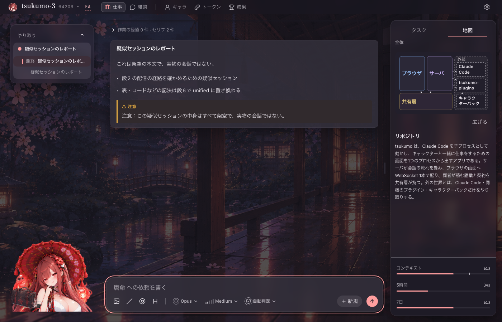
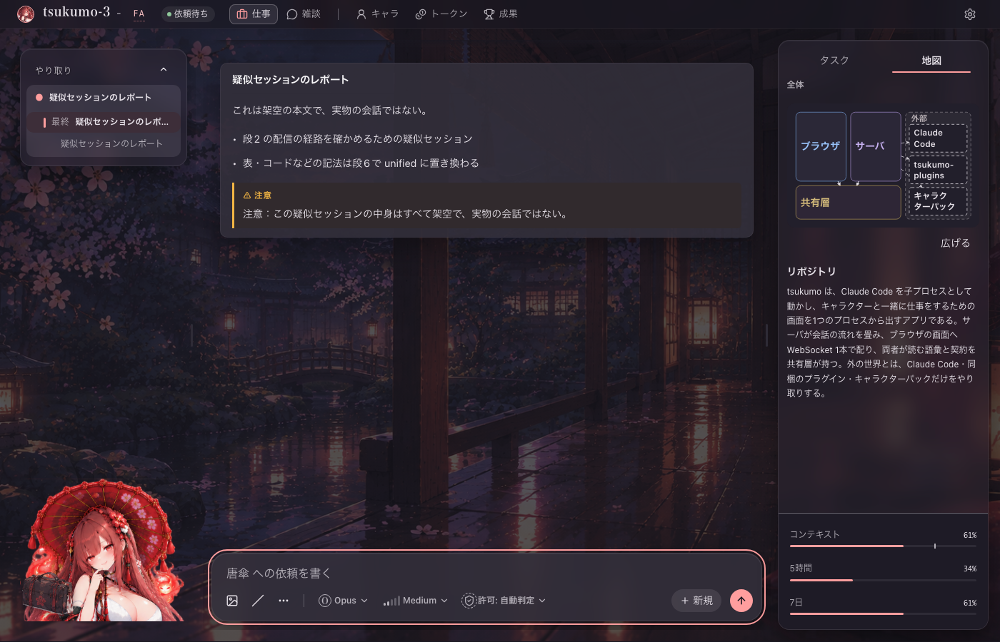

Impeccable の critique で、Nielsen の10原則を 0〜4 で採点した。今の画面は 26/40、見本の形は 29/40。右の列に地図が出ているのは、疑似セッションに .beads が無いため地図のタブが強制されているからで、実際の既定は「タスク」のタブ。この点は今の画面の減点から外した。
| 原則 | 今 | 見本 | 見本で変えたこと・残る課題 |
|---|---|---|---|
| 1. 状態が見える | 3 | 3 | 部屋の状態の札（依頼待ち・答え待ち・失敗）を名前の隣に出した。進行中の札は撮れていない |
| 2. 実世界との一致 | 2 | 3 | ポート番号を帯から外した。許可の札に「許可:」を添えた |
| 3. 自由と取り消し | 3 | 3 | お伺いを保留する道は無いまま |
| 4. 一貫性 | 2 | 3 | 失敗の文はピル・見出し・本文・一覧の4か所に出ていた。見本では流れの1か所だけにした |
| 5. 誤りの予防 | 3 | 3 | 変更なし |
| 6. 見て選べる | 2 | 2 | 印だけのボタンは残る。キー操作も画面に書かれていない |
| 7. 柔軟性と効率 | 3 | 3 | 変更なし |
| 8. 美しさと最小限 | 3 | 3 | 0件の「作業の経過」の行と、入力欄の印2つを外した。紙の下の空いた帯は残る |
| 9. 誤りからの回復 | 2 | 3 | 生の server_error を隠し、「同じ依頼を入力欄に戻す」を主のボタンにした |
| 10. 助けと説明 | 3 | 3 | 変更なし |
| 合計 | 26 | 29 |




